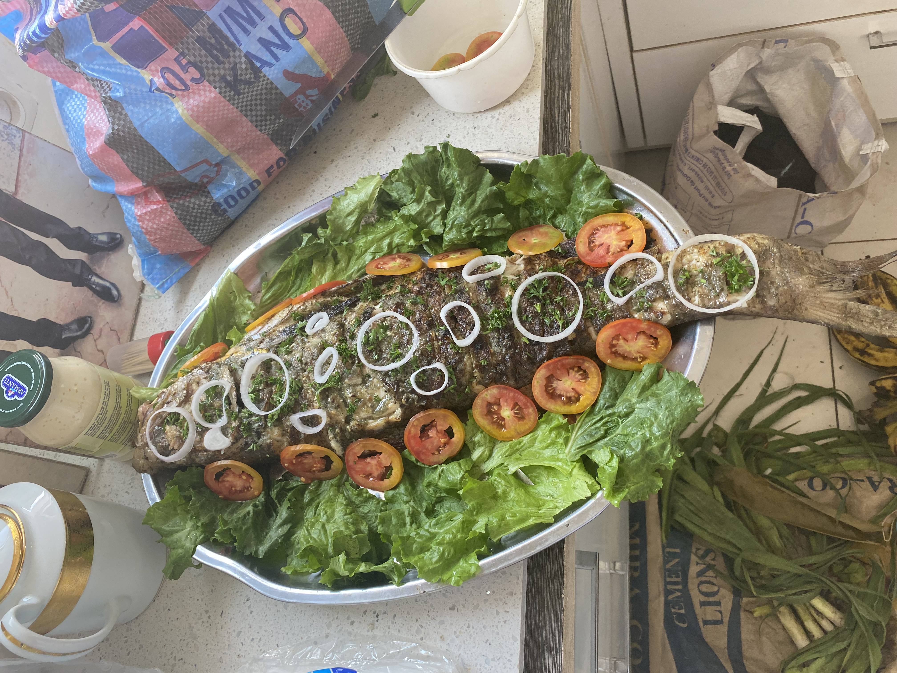
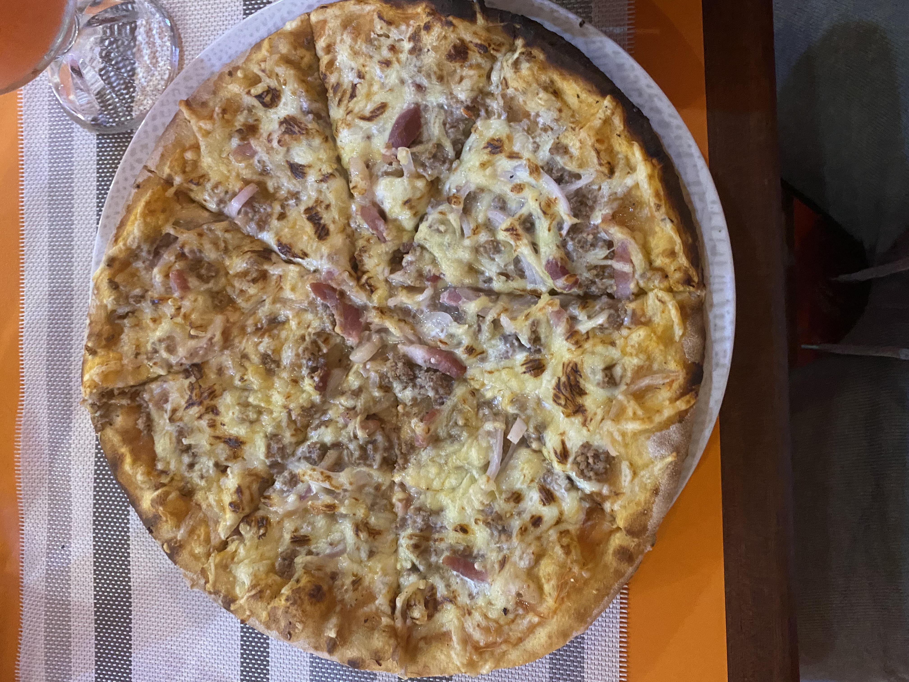

hello my name is walter

Im comming from CAMEROON and i'm eager to work in the largest logistics group in FRANCE
Here are some specialties
- logistics management
- purchasing and procurement management
- international trade, and transport mangement
Here are my hobbies
- Reading
- Sport
- Tourism
Here are my favorite food
 My passion on entrepreneurship
I am passionate about entrepreneurship because it offers the freedom to turn my ideas into reality, allowing me to pursue my passions while making a tangible impact on the world. Entrepreneurship provides an avenue for innovation, personal growth, and financial potential, giving one the autonomy to create its own path and shape its destiny. The thrill of building something from scratch, the sense of achievement in overcoming challenges, and the opportunity to leave a lasting legacy drive a passion for entrepreneurship, propelling me to forward on an exciting journey of creativity, growth, and fulfillment.